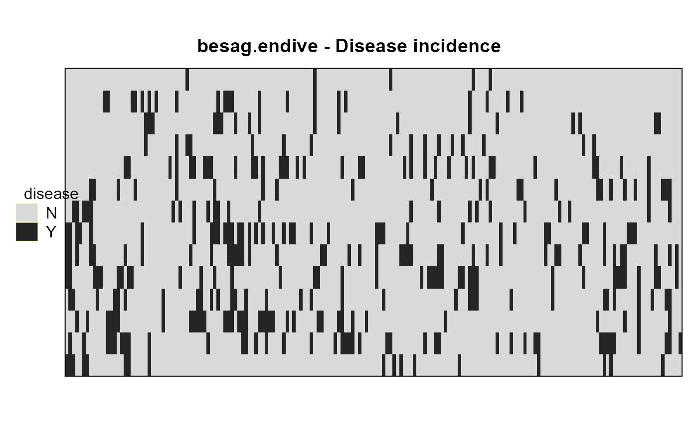

besag.endive.RdPresence of footroot disease in an endive field
A data frame with 2506 observations on the following 3 variables.
colcolumn
rowrow
diseaseplant is diseased, Y=yes,N=no
In a field of endives, does each plant have footrot, or not? Data are binary on a lattice of 14 x 179 plants.
Modeled as an autologistic distribution.
We assume the endives are a single genotype.
Besag (1978) may have had data taken at 4 time points. This data was extracted from Friel and Pettitt. It is not clear what, if any, time point was used.
Friel does not give the dimensions. Besag is not available.
J Besag (1978). Some Methods of Statistical Analysis for Spatial Data. Bulletin of the International Statistical Institute, 47, 77-92.
N Friel & A. N Pettitt (2004). Likelihood Estimation and Inference for the Autologistic Model. Journal of Computational and Graphical Statistics, 13:1, 232-246. http://doi.org/10.1198/1061860043029
library(agridat) data(besag.endive) dat <- besag.endive # Incidence map. Figure 2 of Friel and Pettitt libs(desplot) grays <- colorRampPalette(c("#d9d9d9","#252525")) desplot(disease~col*row, dat, col.regions=grays(2), aspect = 0.5, # aspect unknown main="besag.endive - Disease incidence")if(0){ # Besag (2000) "An Introduction to Markov Chain Monte Carlo" suggested # that the autologistic model is not a very good fit for this data. # We try it anyway. No idea if this is correct or how to interpret... libs(ngspatial) A = adjacency.matrix(179,14) X = cbind(x=dat$col, y=dat$row) Z = as.numeric(dat$disease=="Y") m1 <- autologistic(Z ~ 0+X, A=A, control=list(confint="none")) summary(m1) ## Coefficients: ## Estimate Lower Upper MCSE ## Xx -0.007824 NA NA NA ## Xy -0.144800 NA NA NA ## eta 0.806200 NA NA NA } # ---------------------------------------------------------------------------- if(0){ # asreml3 libs(asreml) # Now try an AR1xAR1 model. dat2 <- transform(dat, xf=factor(col), yf=factor(row), pres=as.numeric(disease=="Y")) m2 <- asreml(pres ~ 1, data=dat2, rcov= ~ar1(xf):ar1(yf)) # The 0/1 response is arbitrary, but there is some suggestion # of auto-correlation in the x (.17) and y (.10) directions, # suggesting the pattern is more 'patchy' than just random noise, # but is it meaningful? libs(lucid) vc(m2) ## effect component std.error z.ratio constr ## R!variance 0.1301 0.003798 34 pos ## R!xf.cor 0.1699 0.01942 8.7 uncon ## R!yf.cor 0.09842 0.02038 4.8 uncon } if(0){ ## libs(asreml4) ## # Now try an AR1xAR1 model. ## dat2 <- transform(dat, xf=factor(col), yf=factor(row), ## pres=as.numeric(disease=="Y")) ## m2 <- asreml(pres ~ 1, data=dat2, ## resid = ~ar1(xf):ar1(yf)) ## # The 0/1 response is arbitrary, but there is some suggestion ## # of auto-correlation in the x (.17) and y (.10) directions, ## # suggesting the pattern is more 'patchy' than just random noise, ## # but is it meaningful? ## libs(lucid) ## vc(m2) ## ## effect component std.error z.ratio bound <!-- %ch --> ## ## xf:yf(R) 0.1301 0.003798 34 P 0 ## ## xf:yf!xf!cor 0.1699 0.01942 8.7 U 0 ## ## xf:yf!yf!cor 0.09842 0.02038 4.8 U 0 }